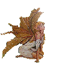
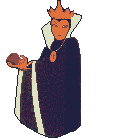
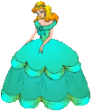
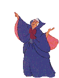
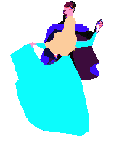

Para mi sobrina Rocío Isabel Bueno Álvarez
Cuenta la leyenda que hace unos cuantos años vivía en el Castillo de Blarney la princesa Suinde, prometida al conde Igor desde que ambos eran niños. A medida que iban creciendo en estatura también crecía el amor entre ellos.
Cerca del castillo vivía también, Edwina, una bella hechicera que, celosa de la felicidad de la pareja, realizó un encantamiento convirtiendo al conde en un cóndor.
La princesa lloraba, pero, cuando más triste estaba apareció su hada madrina para decirle la forma de romper el hechizo de Edwina al conde Igor. Tendrás que guardar absoluto silencio durante tres años, tres meses tres días , tres horas, tres minutos y tres segundos. Con tu sacrificio por amor a tu amado, se romperá el hechizo y volveréis a ser felices otra vez.
 La bella Suinde recluida en su silencio tiene un amante que nadie más conoce. Por amor a Suinde, su amante pasa todos los días por delante de su cuarto y espera ansioso la oportunidad de verla. Ella sabe que él esta cerca, así que levanta rápidamente la cortina de su aposento para que él pueda contemplarla por un instante, y enseguida vuelve a esconderse. El sabe que fue solo por causa de su amor por lo que Suinde se mostró durante algunos segundos. Entonces, todo su corazón y su alma se entregan a la comprensión de su secreto.
Transcurrieron tres años tres horas tres minutos y tres segundos y el hechizo de Edwina se rompió y el conde Igor recobró su forma humana. Suinde e Igor se casaron y vivieron muy felices.
En la actualidad el Castillo está situado en el pueblo de Blarney, al sur de Irlanda, cerca de Cork. En la torre más alta y sujeta por unos barrotes hay una piedra mágica. Todo aquél que se atreve a llegar a ella y, agarrándose a los barrotes, besar la piedra es agraciado con el don de la elocuencia.